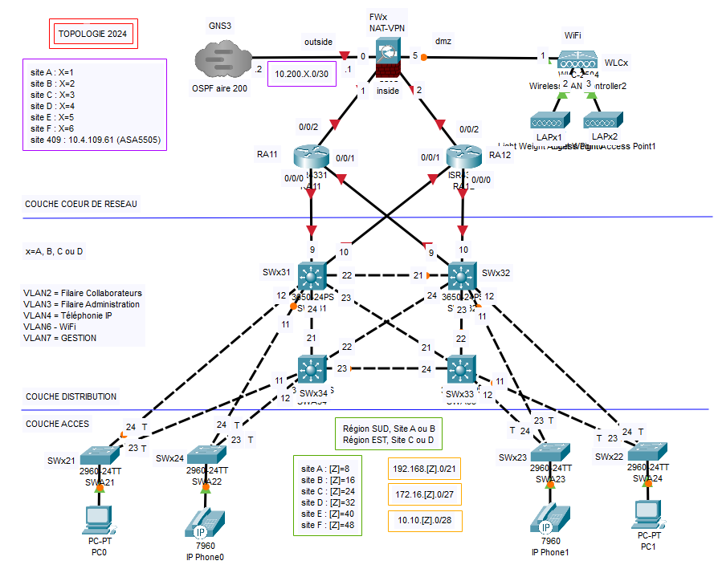

Cisco Packet Tracer
Projet d'Architecture Réseau
Sécurisation et Interconnexion Multi-sites
Contexte et Objectifs
Ce projet a été réalisé dans le cadre de mes études en BUT Réseaux et Télécommunications. Il avait pour objectif de mettre en place des mécanismes de sécurité sur une infrastructure réseau en appliquant des concepts avancés de cybersécurité, tout en respectant des contraintes techniques précises pour assurer une protection optimale contre diverses menaces.
Méthodologie et Réalisation
- Architecture Réseau : Création d'une architecture segmentée en plusieurs VLANs pour isoler les zones de sécurité. Utilisation du routage dynamique via OSPF.
- Sécurité : Mise en place de pare-feux ASA pour contrôler les flux. Utilisation de VPNs pour sécuriser les communications distantes. Implémentation de NAT et AAA.
- Services Réseaux : Installation de serveurs DHCP, DNS et IPBX. Mise en œuvre de mécanismes de sauvegarde.
Résultats et Analyse
Ce projet a permis de :
- Renforcer la sécurité du réseau par la segmentation (VLANs) et le contrôle d'accès (ACLs, NAT).
- Améliorer l'interconnexion des sites distants grâce au routage dynamique OSPF.
- Fournir une infrastructure robuste avec des services essentiels.
- Documenter chaque étape pour assurer la traçabilité.
La Topologie Réseau

Vue d'ensemble de la topologie logique sous Cisco Packet Tracer